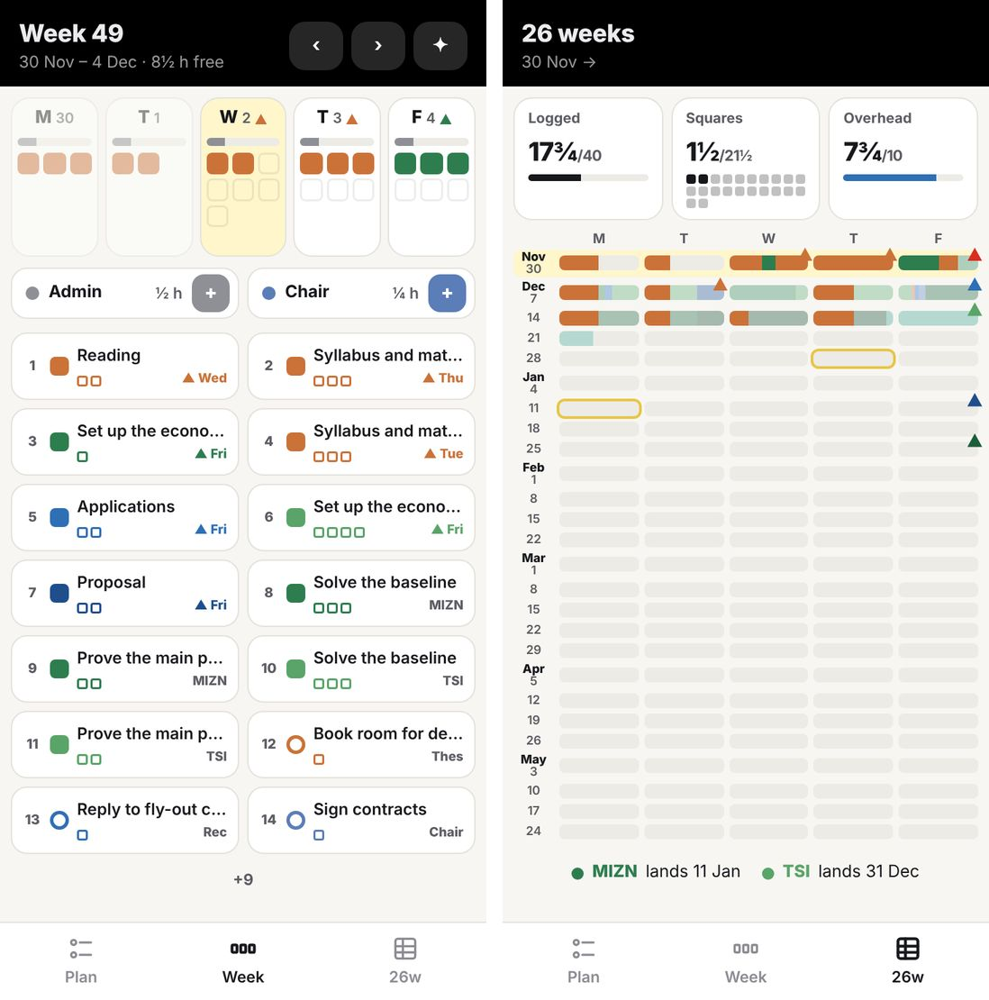
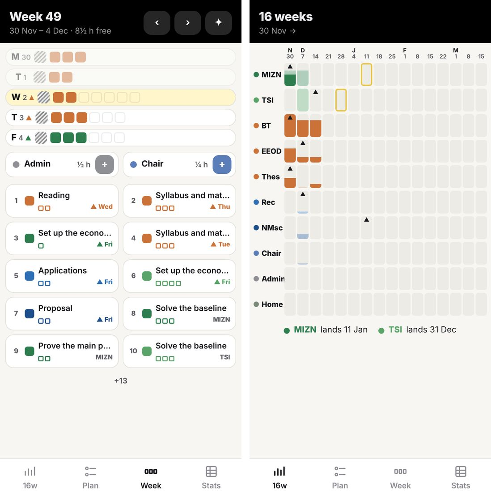
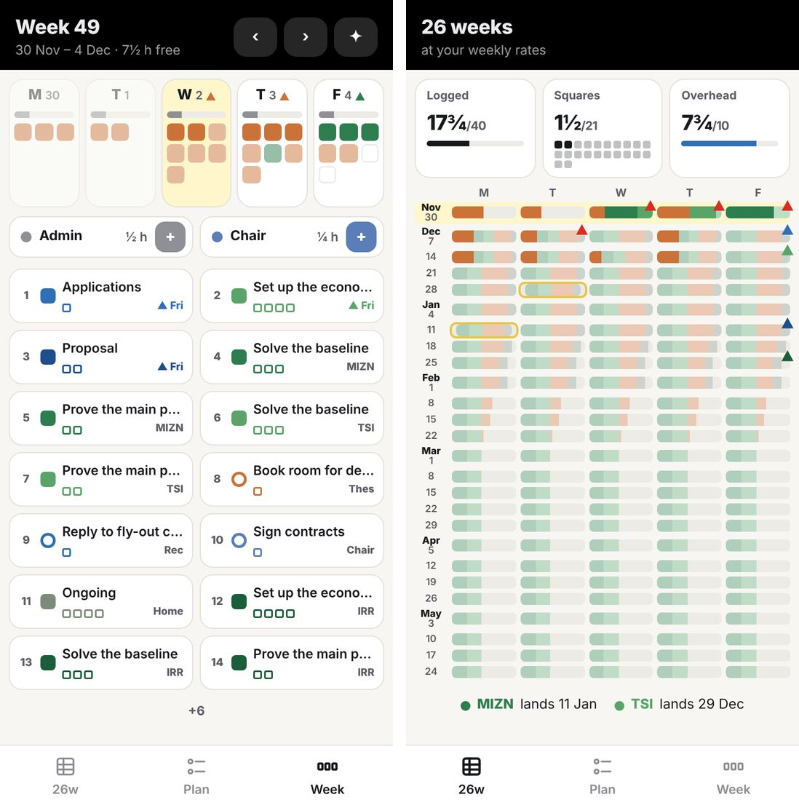
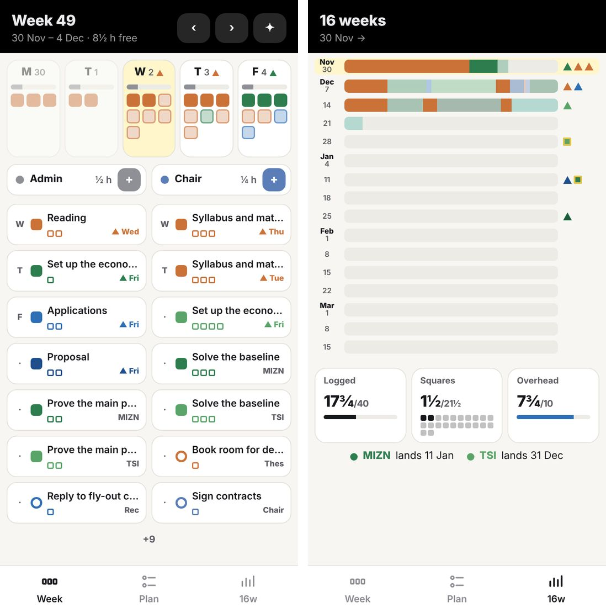
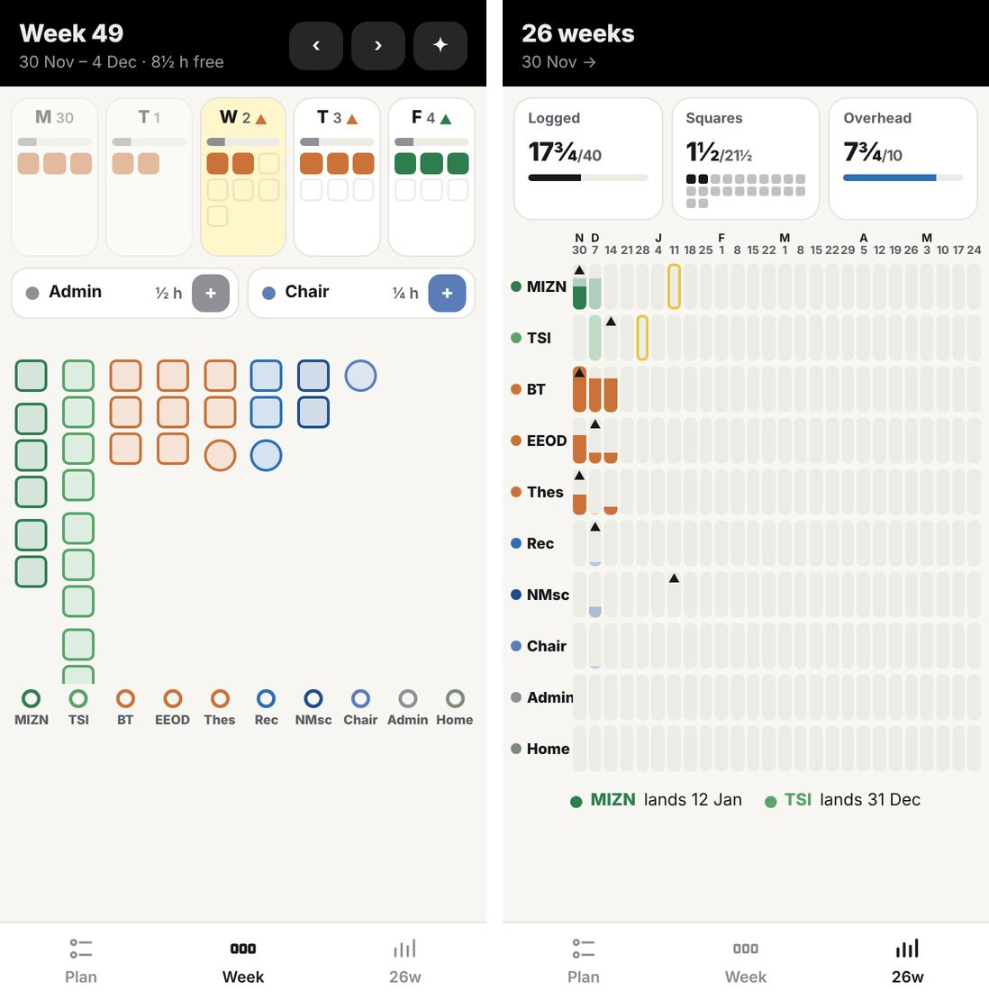

Five apps with your three steps. Plan: turn task hours (dots) into squares with □, as in the original. Week: the weekdays on top with Admin and Chair reserved, and a queue of squares underneath that you drag onto days or reorder; ✦ fills the week. Then 16 or 26 weeks of flattened rectangles with the forecast and stats.

01LinePlan: open a project and tap dots with □ to turn hours into squares, like the original. Week: the weekdays on top with Admin and Chair reserved; below, the queue of squares in two columns. Drag a card onto a day, or onto another card to reorder; ✦ fills the week in queue order. Tap today's squares when done. 26w shows 26 weeks of flattened days with the forecast and stats.Open Line
02LanesStarts with the next 16 weeks: one lane per project, with flattened bars for booked and forecast hours, ▲ deadlines and the week each research stage lands. Plan and Week work as in Line, but the week is five flat rows. Stats has its own tab.Open Lanes
03AutoSquares come automatically. In Plan you set how many squares a week each project gets; each new week those squares are made and booked by themselves. Week only shows what is left over: quick tasks, catch-ups and what did not fit. 26w forecasts the coming weeks at those rates.Open Auto
04LadderThe queue is the plan. Drag cards to reorder and the week above redraws at once: light squares show where each card lands, and the letter on a card says which day. Drop a card on a day to pin it there, and ✦ locks the whole week. 16w shows weekly bars and stats.Open Ladder
05SupplyAlmost no words. Under the week, each of your ten projects has a column of its unplanned squares, with the next one on top. Drag a square up onto a day, or tap it and then tap a day. 26w shows one lane per project over half a year, with stats on top.Open Supply